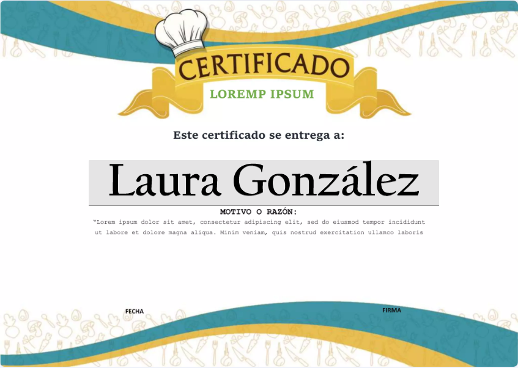

Sobre mí
Mi nombre es Laura González y soy la fundadora y chef principal de Delicias Kitchen. Mi pasión por la cocina saludable comenzó hace más de diez años, cuando decidí hacer un cambio en mi vida y adoptar una dieta vegetariana. Durante muchos años, trabajé en el sector de la salud, pero fue mi amor por la gastronomía lo que me llevó a tomar una decisión clave: convertirme en chef especializada en alimentación vegetal.
Me gradué en la Escuela Universitaria de Hostelería y Turismo de Sant Pol de Mar, donde obtuve un diploma en gastronomía y nutrición. Más tarde, decidí especializarme en cocina vegetariana y vegana a través de un curso en el prestigioso Instituto de Cocina Saludable de Barcelona. Durante mis estudios, aprendí a crear platos que no solo son deliciosos, sino que también respetan las necesidades nutricionales del cuerpo humano.
A lo largo de mi carrera, he tenido la oportunidad de trabajar con chefs internacionales y expertos en nutrición, lo que me ha permitido enriquecer mis conocimientos y ampliar mi enfoque hacia una cocina sostenible y nutritiva. También he asistido a varios seminarios y congresos relacionados con la nutrición consciente y la cocina basada en plantas, lo que ha fortalecido mi compromiso con la alimentación saludable.